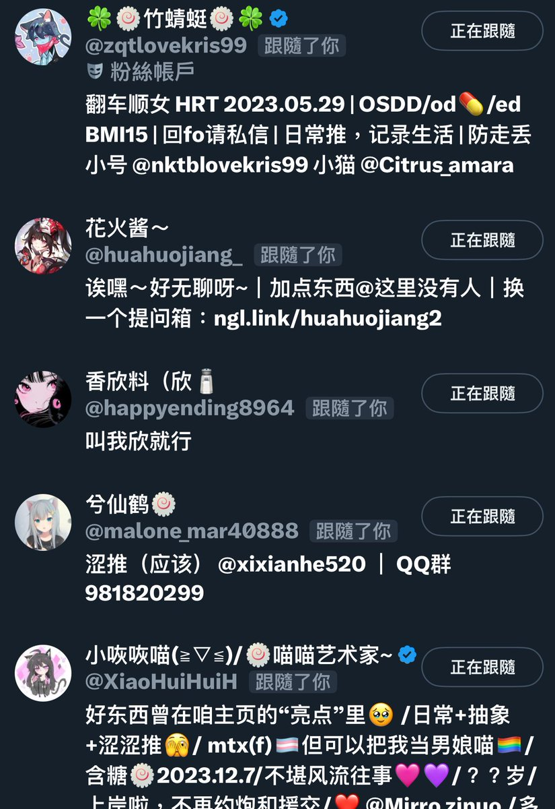

神樂板🌸星璃醬
@y2kstarrychan
@lovelyshuimao @XiaoHuiHuiH @zqtlovekris99 @fengmeng_ 太多了，记不住了

lovely水
@lovelyshuimao
你们还记得自己上推最先fo的那几个人嘛？
我的话令我印象深刻最早关注的就是..：
小咴咴喵@XiaoHuiHuiH 第一个刷到的mtf
竹蜻蜓@zqtlovekris99 因为他是第一个刷到的跨男
宫水风梦@fengmeng_ 看她每天都在捡垃圾吃…觉得实在是太惨了
@百川花花子 她挂收款码说自己吃不起饭了…觉得她太可怜了还转了钱 https://t.co/ImEYeMXQht